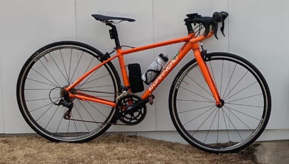

KabutoWebi
=KabutoEbi+Web
KabutoEbi
高専3年生
電気情報工学科(電気分野は嫌い)
趣味: ロードバイク / 一人旅
主にC++で競技プログラミングをしています
時々、電子工作・ゲーム制作・アプリ開発・Web開発をします
技術スタック
| C++ | そこそこ |
| Unity | ある程度 |
| React | ある程度 |
| Flutter | ある程度 |
| Git | 基本的な操作 |
| AtCoder | 茶 |
| Japanese | ぎりぎり |
ロードバイク
スペック
| メーカー | LOUIS GARNEAU |
| モデル | AXIS |
| 年式 | 2016年 |
| 変速段数 | 2×8 |
| 重量 | 約9.4kg |
| タイヤサイズ | 700×25c |
ライディングデータ
| 総走行距離 | 約540km |
| 最長距離 | 110km |
| 平均速度 | 28km/h |
一人旅
これまでに訪れた都道府県
北海道 / 神奈川 / 東京 / 石川 / 滋賀 / 兵庫 / 京都 / 大阪 / 奈良